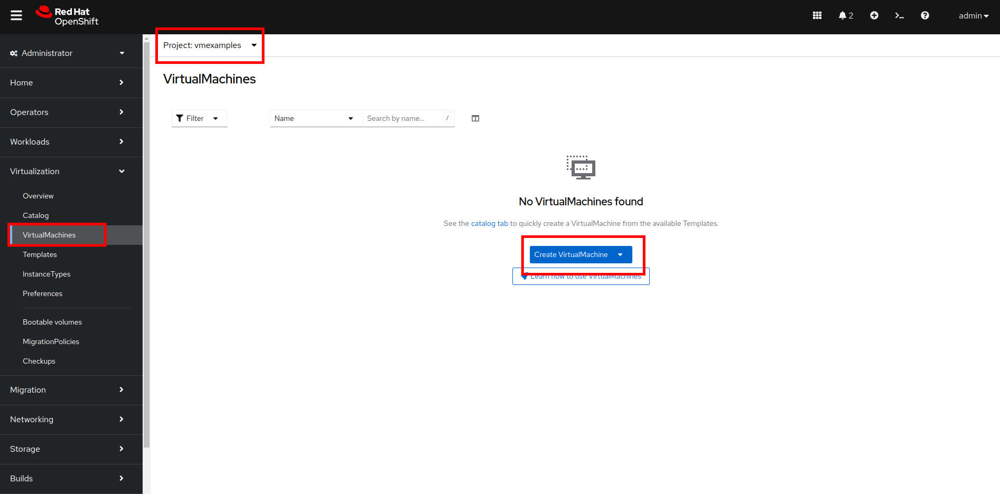
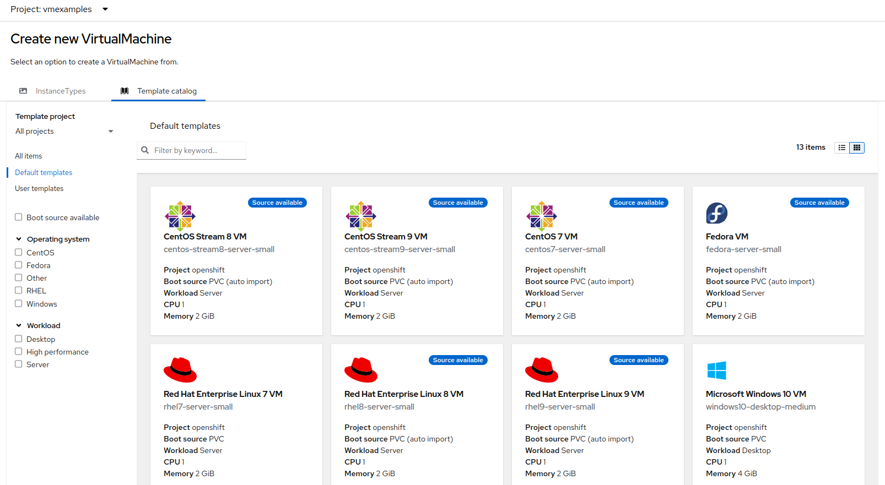
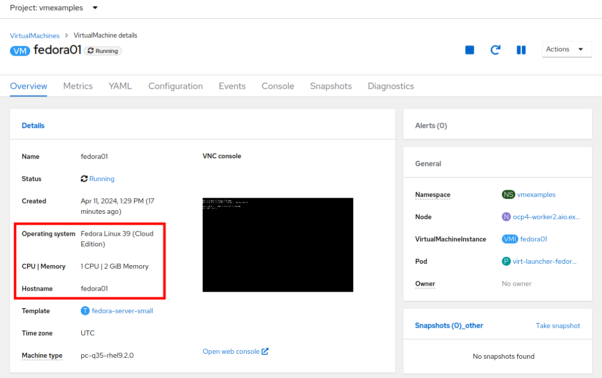
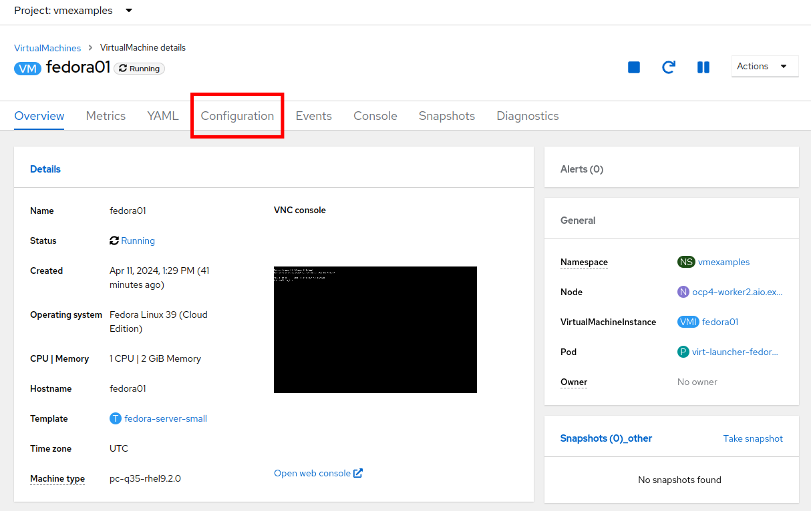
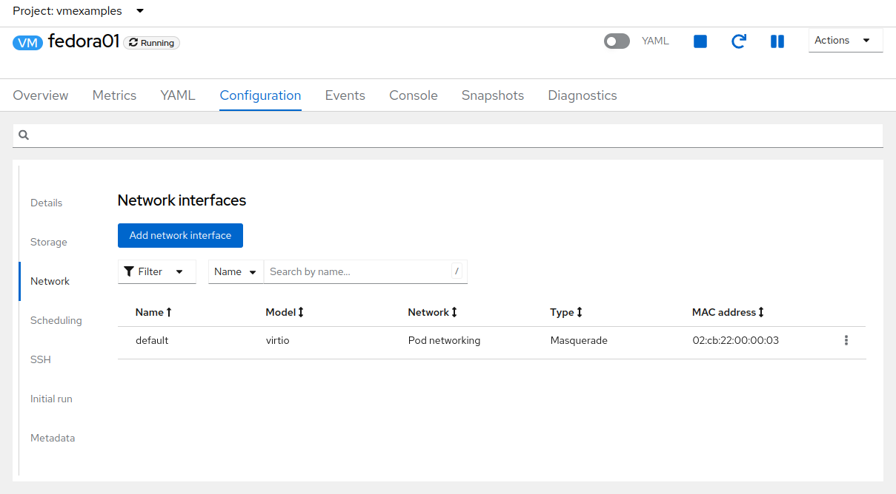
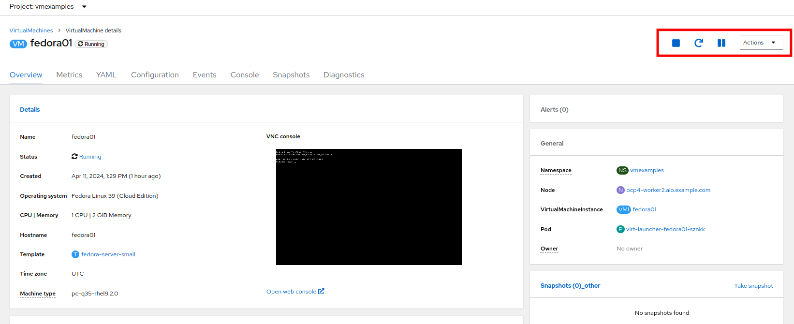
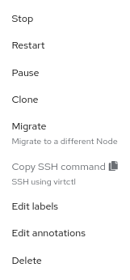
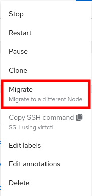
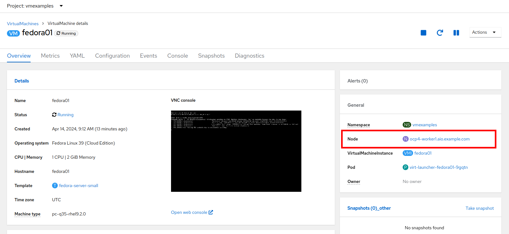

Virtual Machine Management
Introduction
The beginning section of this lab will introduce you to the basics of creating and managing VMs in OpenShift Virtualization. You will see how the web console guides you through the whole process of creating a virtual machine from a pre-defined template. We will then review the properties of that VM, and do some basic customizations perform actions like live migration, that are often expected of virtual machine administrators.
-
Create a new virtual machine
-
Review and modify resources for virtual machines
-
Understand how VM power states are managed using the OpenShift console
-
Live migrate a VM between two hosts
Create a New Project
Like other objects in OpenShift, Projects, which are an abstraction for Kubnernetes namespaces, are the boundaries for permissions and other aspects of using and manaing the resources. Creating a Project is an important first step for any deployment.
-
Browse to Virtualization → VirtualMachines using the left navigation menu:

The Virtualization tab is available only when Red Hat OpenShift Virtualization is installed and properly configured. In this lab environment the installation and configuration has already been performed for us.
-
Examine the VirtualMachines dashboard that appears. There are currently several VMs listed, but are not turned on:

-
Before creating a VM we need to create a new project. Virtual machines are deployed to a specific project, or namespace, where, by default, users without permission to the namespace cannot access, manage, or control them. Administrators can access all projects, and therefore view all virtual machines, however regular users must be given access to projects as needed.
-
Click Project: All Projects and then click Create Project.
-
In the Name field, type
vmexamplesto name the project, then click Create.
-
Create a Linux Virtual Machine
-
From the Virtual Machines inventory, click on the Create VirtualMachine button and select From template from the drop-down menu.
VMs can also be created from an InstanceType wizard as well as created by entering a custom YAML definition, but for this current lab scenario we are going to stick with creating VMs based on existing templates.  -
The wizard will appear showing the available pre-defined VM templates.
Reviewing the list of available templates you’ll notice that some have a blue badge which indicates "Source available". These are templates which are using the automatically downloaded and stored template disks reviewed in the previous page. If you were deploying in your own environment, you have the option of preventing these from being created and/or removing those source disks, followed by creating and uploading custom disks for your organization.
 -
Select the Fedora VM tile, and a dialog opens.

-
Change the name to
fedora01and press Quick create VirtualMachine:
-
After a few seconds, expect to see the VM is
Running. During this time, the storage provider has cloned the template disk so that it can be used by the newly created virtual machine. The amount of time this takes can vary based on the storage provider being used to create the boot disk.
-
After the VM is created, examine the Events tab to see some details of the process. If there are any issues with the creation of the VM, they will show up on this tab as well.

-
A DataVolume is created. DataVolumes are used to manage the creation of a VM disk, abstracting the clone or import process onto OpenShift native storage during the virtual machine’s creation flow.
-
The VM is started.
-
-
Click the Overview tab to return to the primary screen detailing information related to the VM. Note that for this template, the default is 1 CPU and 2 GiB of memory. As the administrator, you can create templates that customize the default configuration of virtual machines. Later in this lab we will have the opportunity to explore the creation of custom templates.
The IP address of the virtual machine on the software-defined network (SDN) is also displayed here, along with information about the boot order, workload profile, the cluster node hosting the virtual machine, and more. By default VMs are attached to the default pod network. Later in this lab we will explore advanced networking options, and how to customize connectivity for VMs.

Administering Virtual Machines
Administering and using virtual machines is more than simply creating and customizing their configuration. As the platform administrator, we also need to be able to control the VM states and trigger live migrations so that we can balance resources, perform maintenance tasks, and reconfigure nodes.
-
Click the Configuration tab, this is the entry point to obtain information about the resources of the Virtual Machine.
It includes seven subtabs:

-
Details: This tab presents all of the physical features of the VM in a single panel. From here you can make edits to various descriptors and basic hardware configurations including modifying the cpu or memory, changing the hostname, attaching passthrough devices, and modifying the boot order.
-
Storage: This tab lists the disks attached to the system and allows to add new disks to the system. If the guest is configured with the agent, it lists the filesystems and the utilization. Here it is possible to attach ConfigMaps, Secrets, and Service Accounts as extra disks. This is useful when passing configuration data to the application(s) running in the virtual machine.
-
Network: This Tab shows the current network interfaces configured for the VM and allows for you to add new ones.
-
Scheduling: This tab includes advanced configuration options indicating where the VM should run and the strategy to follow for eviction. This tab is used to configure (anti)affinity rules, configure node selectors and tolerations, and other behaviors that affect which cluster nodes the VM can be scheduled to.
-
SSH: This tab allows you to configure remote access to the machine by creating an SSH service on a configured load-balancer, or by injecting public SSH keys if the feature is enabled.
-
Initial run: This tab allows us to configure cloud-init for Linux or sys-prep for Microsoft Windows, including setting the commands to be executed on the first boot, such as the injection of SSH keys, installation of applications, network configuration, and more.
-
Metadata: This tab shows current Labels and Annotations applied to the virtual machine. Modifying these values can help us tag our machines for specific purposes, or help us enable automated workflows by uniquely identifying machines.
-
-
List the disks associated with the VM by clicking on the Storage tab:

In this environment, the default StorageClass, which defines the source and type of storage used for the disk, is called
ocs-storagecluster-ceph-rbd-virtualization. This storage is the default type provided by OpenShift Data Foundation (ODF) for running virtual machines. Each storage provider has different storage classes that define the characteristics of the storage backing the VM disk. -
Examine the network interfaces attached to the VM by clicking on the Network interfaces subtab:
When a VM is created, an interface on the
PodNetworkingnetwork of typemasqueradeis created by default. This connects the VM to the SDN and provides access from the VM to outside the OpenShift cluster. Other VMs, and Pods, in the cluster can access the virtual machine using this interface. Furthermore, a VM connected to the SDN can be accessed externally using a Route, or Service with type load balancer, or even have a Network Attachment Definition configured to allow direct access to external networks.
Controlling Virtual Machine State
As a user with permission to access Virtualization, you can stop, start, restart, pause, and unpause virtual machines from the web console.
-
Click the Overview tab to return to the summary screen.
-
In the top right corner you will notice shortcut buttons for running state: stop, restart, and pause. As well as a dropdown menu title Actions.
-
Stop: Starts a graceful shutdown of the Virtual Machine.
-
Restart: This will send a signal to the operating system to reboot the Virtual Machine. Guest integrations are needed for this to work properly.
-
Pause: The process is frozen without further access to CPU resources and I/O, but the memory used by the VM at the hypervisor level will stay allocated.
-
-
You can also access these options and more by clicking on the Actions menu and seeing the options available in the drop down list.
 -
Press the Stop button and wait till the Virtual Machine is in state
Stopped.
-
Clicking on Actions, the option Start appears, and the options Restart and Pause are greyed out.

-
Click Start, and wait for the
Runningstatus. -
Using the Actions menu, or the shortcut button, press the Pause option. The Virtual Machine state will change to
Paused.
-
Unpause the Virtual Machine using the Actions menu and the option Unpause, or by using the shortcut button.
Live Migrate a Virtual Machine
In this section, we will migrate the VM from one OpenShift node to another without shutting down the VM. Live migration requires ReadWriteMany (RWX) storage so that the VM disks can be mounted on both the source and destination nodes at the same time. OpenShift Virtualization, unlike other virtualization solutions, does not use monolithic datastores mounted to each cluster member that hold many VM disks for many different VMs. Instead, each VM disk is stored in its own volume that is only mounted when and where it’s needed.
-
Navigate to the Overview tab to see where the worker node is running:

-
Using the Actions menu, select the option to Migrate.
 -
After a few seconds, the VM will change the status to
Migrating. A few seconds later, it will return to theRunningstatus, but on a new node. The VM has been successfully live migrated!
Summary
In this lab, we reviewed virtual machine state management tasks, and executed a live migration of a VM. Both of these are common and necessary tasks as platform administrators and a great way to familiarize yourself with some basic features available when working with VMs in OpenShift Virtualization.